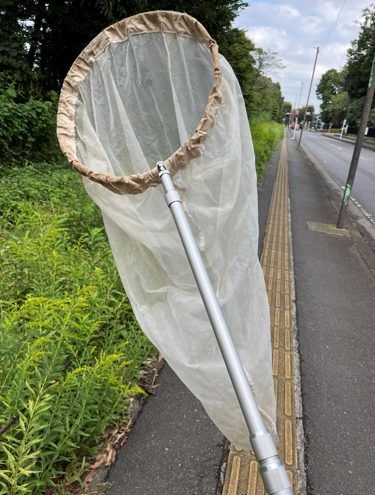
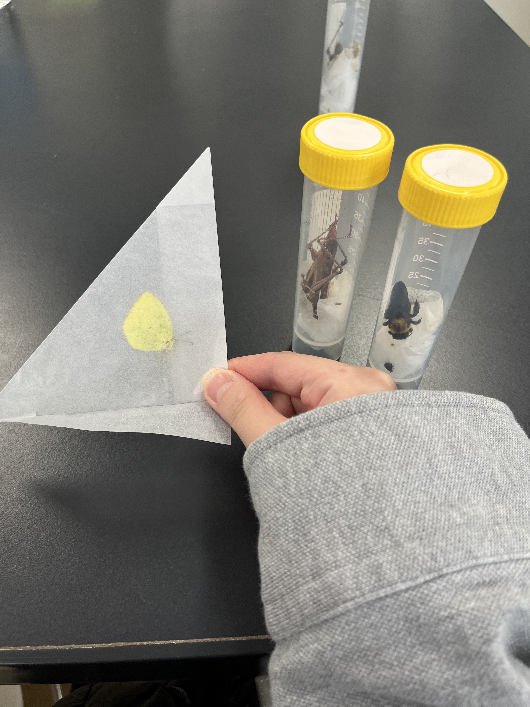
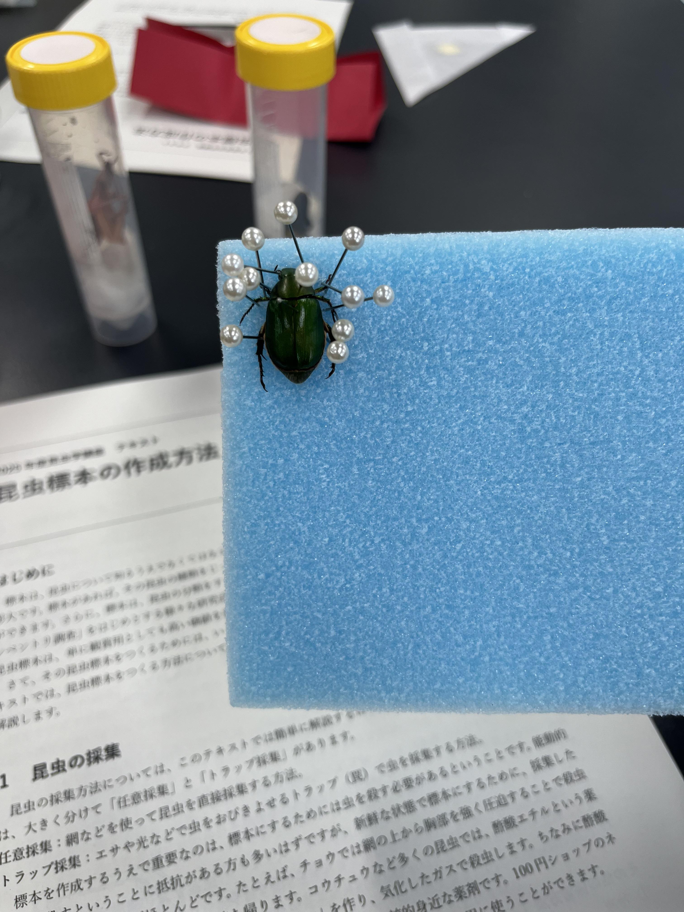
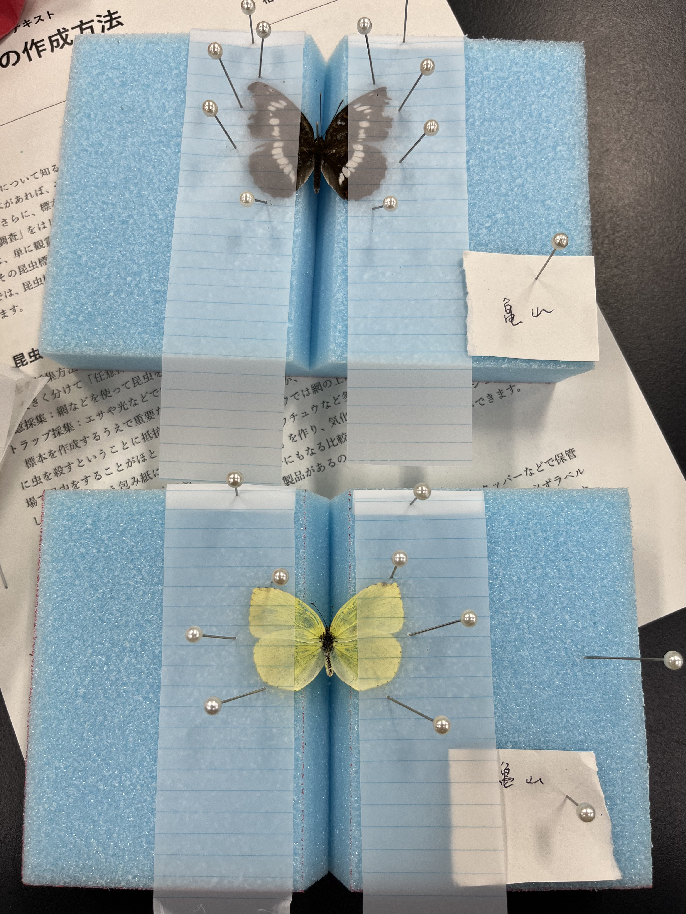
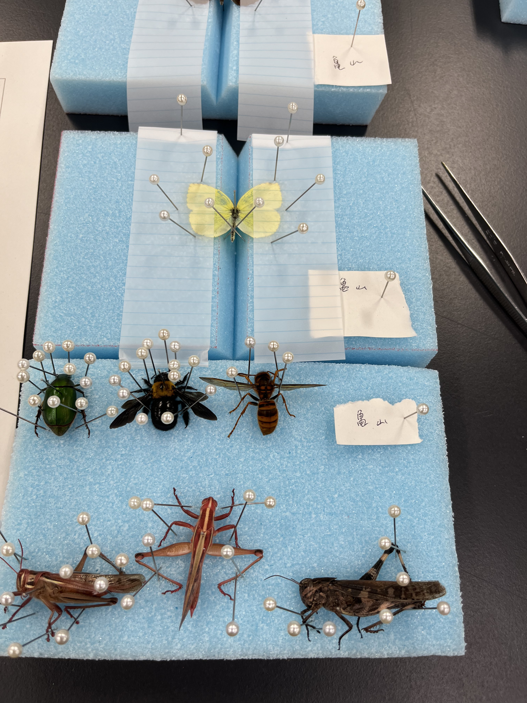
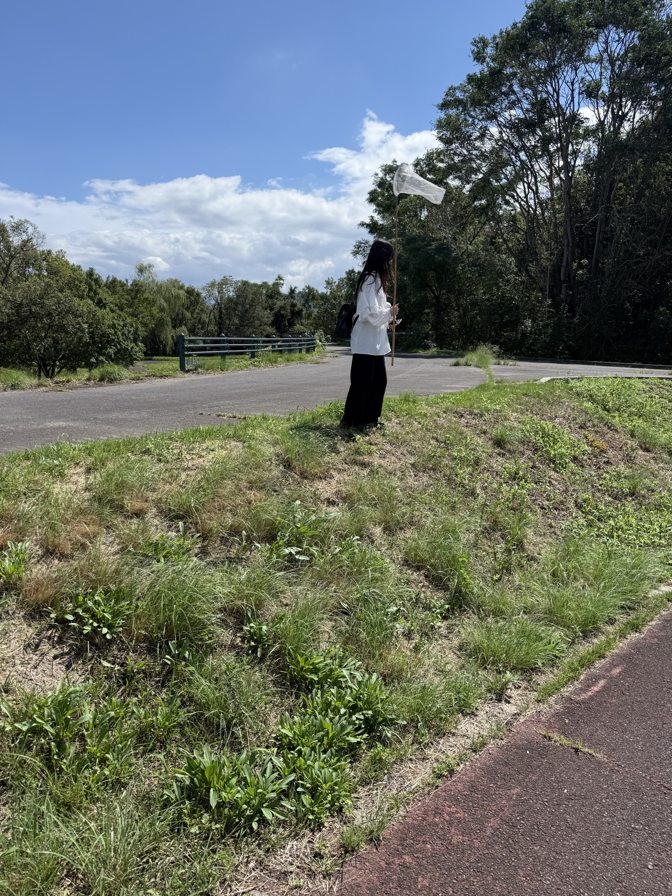
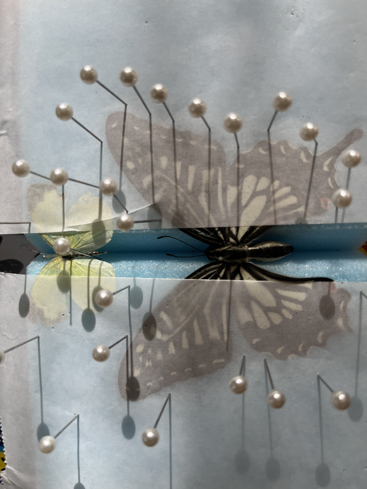

昆虫標本の作り方
※ここから下は虫が写ります！
↓↓↓虫を見たくない人はクリック↓↓↓
虫は見たくないので戻る

まず、昆虫を採集します

採集したら、すぐに薬品（酢酸エチル）で締めます
ない場合は、なぜか酢酸エチルが成分に含まれているCANMAKEのネイルリムーバーでOK!
https://www.canmake.com/item/detail/quick-and-easy-remover

ピンで脚を固定します

蝶々の場合は、羽根を広げた状態で紙を重ね、羽根の周りをピンで固定します

ピンで固定が完了した状態です
この状態で2週間乾燥させたらできあがり
~~~~~~~~~~~~~~~~~~~~~~~~~~~~

土器川生物公園での採集

土器川生物公園で採集したアゲハ